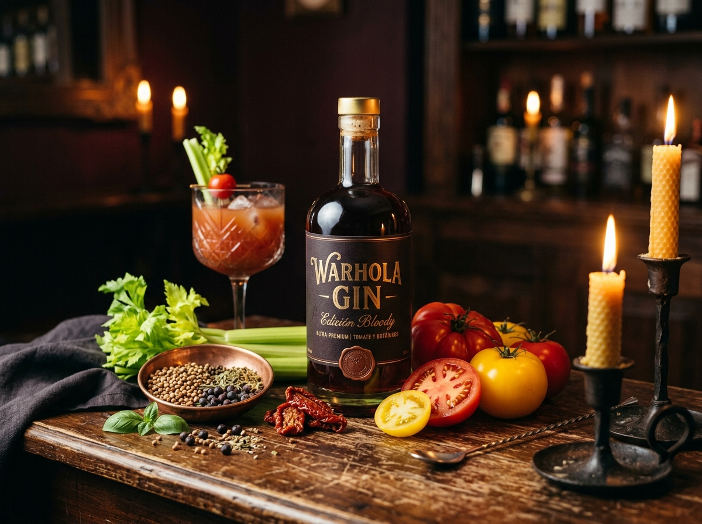
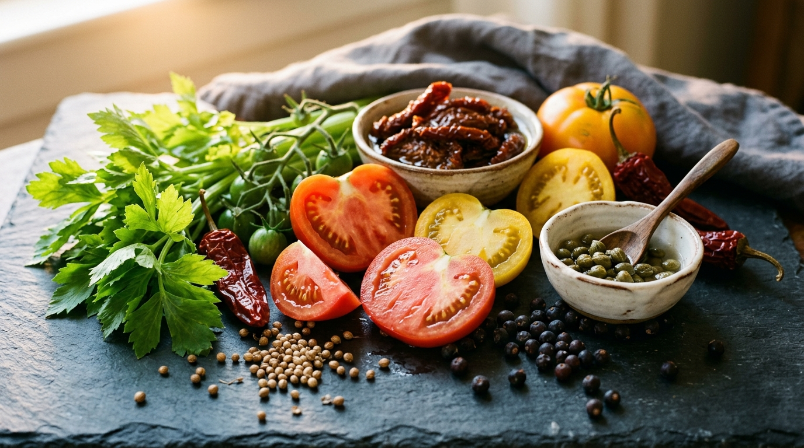
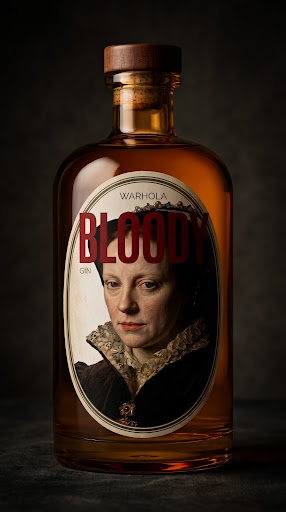
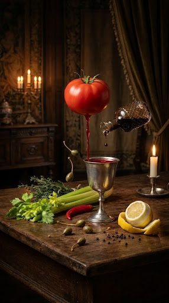
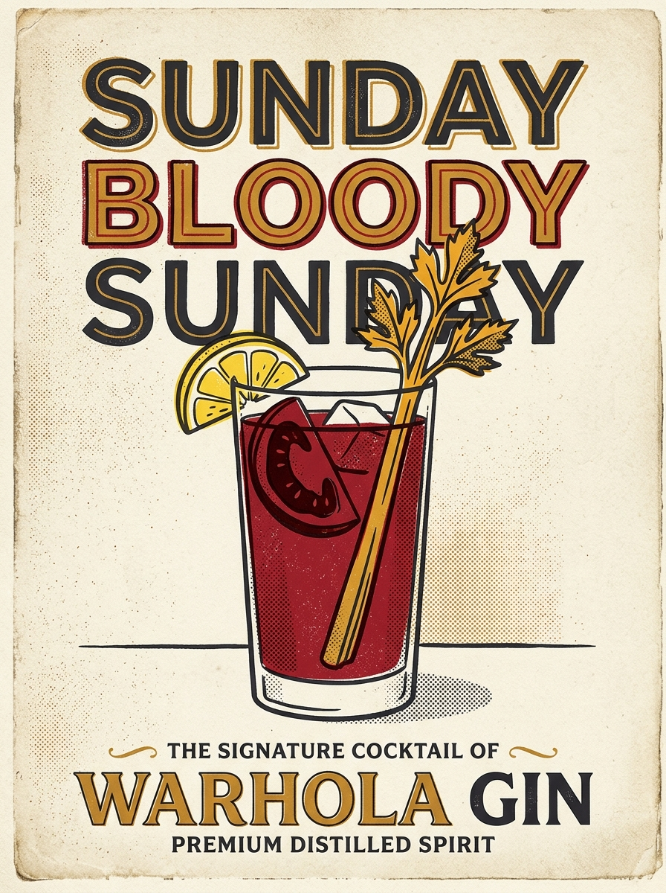

A Bloody Mary, Distilled.

Tenés en tus manos la Edición Bloody de Warhola Gin. Un destilado de autor que rompe convenciones: capas, matices y acordes que vas a descubrir paso a paso con tu nariz y tu paladar.
El Ritual de Servicio en Barra
Para apreciar la arquitectura botánica y la textura umami antes de la dilución:
Servilo en copa Sphere: un globo amplio sin tallo para concentrar el mapa aromático.
Hielo abundante, cristalino y macizo para enfriar en segundos sin diluir el destilado.
Dos giros suaves para oxigenar el gin y activar los aceites botánicos en las paredes del cristal.

Capas Olfativas y Paladar

La Base Olfativa
Acercá la nariz al borde de la copa, labios apenas abiertos, y respirá corto tres veces.
¿Qué aroma aparece primero?

Alquimia de Dilución
La efervescencia de la tónica actúa como un transportador molecular: el gas carbónico arrastra los aceites esenciales hacia la superficie y despierta nuevos acordes de autor.
Acorde de Salida Volátil
La efervescencia inicial desprende las moléculas más livianas:
Un destello verde brillante e hiperfresco que salta de la copa al contacto con la burbuja.
Acorde de Corazón
La burbuja se asienta y emerge el núcleo aromático estructurado:
Madera noble con pimienta tibia: la columna que sostiene la copa en todo su recorrido.
Acorde de Fondo y Umami
Tras tragar el sorbo, registrá la persistencia que queda en boca:
El umami fermentado y el calor de brasa prolongan la memoria en boca más allá de un minuto.
La Alquimia de Autor
Una base propia de vodka artesanal de papa fermentado y destilado en alambique propio que otorga sedosidad inigualable, fusionada con destilado de cereal tradicional con enebro y coriandro. Sobre ella reposa la trilogía de tomates (fresco, seco curado y planta destilada en cobre), tallo de apio, jalapeño ahumado a la brasa, salsa inglesa y alcaparras.
Mary Tudor & El Mito Reeditado
La ilustración rinde tributo a María I de Inglaterra —conocida en la leyenda popular como Mary Tudor—, figura a la que históricamente se le asoció el nacimiento mítico del cóctel Bloody Mary.
En esta edición rescatamos ese mito no mediante salsas pesadas ni jugos industriales, sino destilando su alma: transformamos el mito de Mary Tudor en un gin cristalino gastronómico, donde la salinidad, el umami y el tomate viven en armonía sin precedentes.
Sunday Bloody Sunday

Bloody Red Snapper de Autor
Cristalería: Copa Sphere o Highball con hielo macizo
- 60 ml Warhola Gin · Edición Bloody
- 120 ml Agua de tomate clarificada fresca
- 15 ml Jugo fresco de limón sutil
- 2 gotas de salsa inglesa artesanal
- Pizca de sal marina en escamas y pimienta negra
Garnish: Tallo tierno de apio de huerta y tomate cherry perforado.
Perfil: Umami puro, cristalino y sumamente elegante.
Dry Martini Umami
Cristalería: Copa Nick & Nora pre-enfriada a -18°C
- 60 ml Warhola Gin · Edición Bloody
- 10 ml Vermouth Dry extra seco
- 2 barspoons de salmuera de alcaparras
Garnish: Alcaparrón curado y piel de tomate seco.
Perfil: Salino, denso, seco y profundamente sofisticado.
Bloody & Tonic de la Casa
Cristalería: Copa Sphere con abundante hielo de roca clara
- 50 ml Warhola Gin · Edición Bloody
- 150 ml Tónica neutra premium baja en azúcar
- Espacio para oxigenación
Garnish: Lámina fina de jalapeño fresco y ramita de romero palmeada.
Perfil: Burbuja vibrante, notas herbales y cosquilleo ahumado sutil.